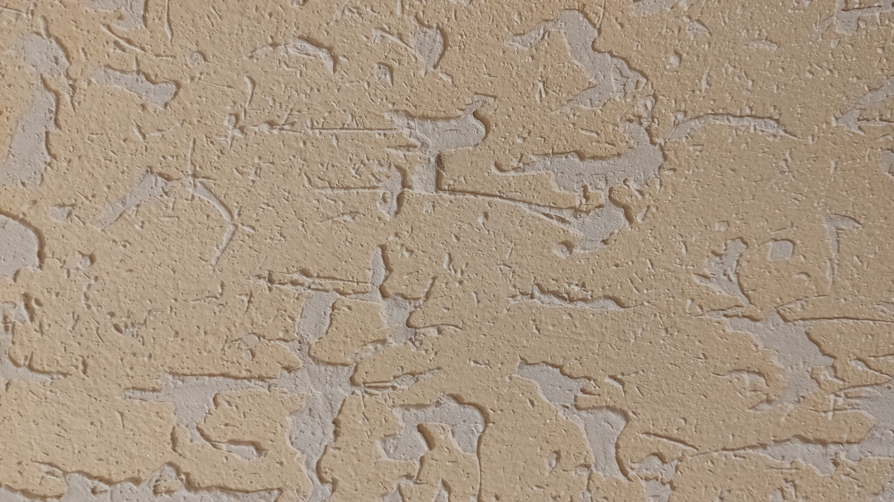

Милли и Билли заглянули в шкаф и достали сундучок. Он был заперт, но когда Билли порылся в шкафу, он нашел ключ. Билли попробовал его в замочной скважине сундучка, и тот открылся.
— Мы нашли его! Мы нашли его! – закричали Милли и Билли.
Дедушка оказался рядом с ними.
— Вы нашли клад как раз вовремя, — сказал он, глядя на часы. – Ого! Уже почти четыре часа!
Милли и Билли высыпали на стол содержимое сундучка, там они нашли много старых ювелирных изделий — ожерелья, броши и браслеты, а также старые часы — одни женские и одни мужские. Они также обнаружили там две маленькие машинки синего и зеленого цвета, и старую книгу о кролике, которая называлась «Приключения Нибблза»
Следующую подсказу найдешь тут:
